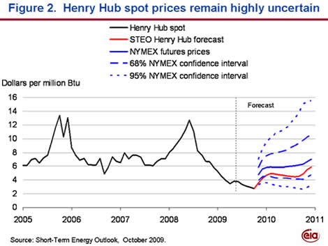

Released on October 7, 2009
(Next Release on October 15, 2009)
Tracking Volatile Energy Prices
- "We would expect people in the market place, in pursuit of avid
and intelligent self-interest, to take account of those elements
of future events that in a probability sense may be discerned to
be casting their shadows before them. (Because past events cast
their shadows after them, future events can be said to cast their
shadows before them.)"
Energy prices are volatile. They change as market participants adjust their expectations to new information from physical energy markets and markets for energy-related financial derivatives. Futures and options markets are a valuable source of information regarding these changing expectations.
Starting with the October 2009 issue (released yesterday), Energy Information Administration’s (EIA) Short-Term Energy Outlook (STEO), began tracking crude oil and natural gas futures prices and the market’s assessment of the range in which prices are expected to trade. We do this using a measure of risk derived from the New York Mercantile Exchange (NYMEX) Light Sweet Crude Oil Options and Natural Gas Options markets known as “implied volatility.” Implied volatility is nothing more than a standard deviation for the expected futures returns embedded in the option’s price.
The NYMEX employs Fischer Black’s commodity option-pricing model2, to calculate the implied volatility, which the NYMEX publishes nightly. EIA recognizes some assumptions made for the model used by the Black model are controversial – e.g., futures prices are lognormally distributed with constant volatility – and will be conducting ongoing research into the price-formation process. However, EIA believes this approach – widely used by market participants, investment banks, and central banks – has been demonstrated to be sound. EIA uses the implied volatilities to create confidence intervals, which are forward-looking expected values resulting from the trading and risk transfer of market participants.
The range of the confidence interval is determined by the confidence level specified for the interval. The confidence level represents the probability that the final market price for a particular futures contract, such as December 2010 crude oil, will fall somewhere within the lower and upper range of prices. For example, for a 95-percent confidence level, we calculate a range of prices within which there is a 95-percent likelihood the delivered price for the commodity will fall (for the month the commodity goes to physical delivery). In other words, there is a 5 percent chance the price for that specific month) will fall outside of the 95 percent confidence interval. The higher the confidence level, the wider the range between lower and upper limits.
Crude Oil. Over the 5 days ending October 1, 2009, the NYMEX crude oil futures contract for December 2009 delivery averaged $69/barrel. The 95-percent confidence interval around the futures price implies market participants are pricing December 2009 WTI between $49/bbl and $96/bbl. Near-term implied volatilities are now lower, and confidence intervals narrower, than they were at this time last year. Confidence intervals tend to widen as markets look further into the future. For example, the 95-percent lower and upper confidence limits for the December 2010 futures contract are $32 per barrel and $168 per barrel, respectively; a $136 per barrel range. The confidence intervals for WTI prices through 2010 highlight the significant uncertainty in the oil price outlook.

Natural Gas. For the 5 days ending October 1, 2009, natural gas futures on the NYMEX were trading at $5.59 per million Btu (MMBtu) for gas delivered to Henry Hub, LA, during December 2009. The 95-percent confidence interval around this price has a lower limit of $3.67 and an upper limit of $8.51, a difference of $4.84 per MMBtu. Last year, NYMEX natural gas delivered to Henry Hub in December 2008 was trading at $7.84/MMBtu. The lower and upper limits of the 95-percent confidence interval were $5.37/MMBtu and $11.43/MMBtu, respectively. This $6.06/MMBtu range corresponded to an implied volatility of 51 percent.

Forecast Henry Hub natural gas spot prices in this STEO are about $1 per million Btu lower than the NYMEX futures prices, which reflects significant uncertainties in the expected natural gas supply and demand balance and the relatively wide range of price forecasts, such as in this STEO and implied by NYMEX futures prices. For example, EIA expects a significant amount of natural gas production will remain economic at prices below the current 2010 NYMEX strip. Additionally, EIA expects that natural gas demand in the electric power sector, which served as a crucial outlet for high natural gas supplies this year, will be limited in 2010 as prices move slightly higher and new coal-fired electric generation capacity becomes available.
Winter Fuels Outlook
EIA projects average household expenditures for space-heating fuels to be $960 this winter (October 1 to March 31), a decrease of $84, or 8 percent, from last winter. This forecast principally reflects lower fuel prices, although expected slightly milder weather than last winter will also contribute to lower fuel use in many areas. The largest expenditure decreases are in households using natural gas and propane, projected at 12 and 14 percent, respectively. Projected electricity and heating oil expenditures decline by 2 percent.
According to the National Oceanic and Atmospheric Administration’s (NOAA) most recent projection of heating degree-days, the Lower-48 States are forecast to be 1.2 percent warmer this winter compared with last winter and 0.5 percent milder than the 30-year average (1971-2000). However, heating degree-day projections vary widely between regions. For example, the Midwest, a major market for propane and natural gas, is projected to be about 4 percent warmer than last winter, while the West is projected to be about 4 percent colder.
Gasoline and Diesel Prices Continue Downward Slide
The U.S. average price for regular gasoline dropped for the eighth consecutive week, dipping three cents to $2.47 per gallon for a cumulative reduction of 18 cents over the eight weeks. The national average was $1.02 below a year ago. Prices fell in all regions of the country with the East Coast average slipping four cents to $2.41 per gallon. The average in the Midwest declined two cents to settle at $2.36 per gallon. Dropping two cents to $2.29 per gallon, the price on the Gulf Coast remained the lowest of any region. The average in the Rocky Mountains fell the most of the major regions, dropping nearly a nickel to $2.50 per gallon. The price on the West Coast slipped four cents to $2.95 per gallon, and in California, the average decreased three cents to $3.07 per gallon.
Diesel prices also declined in all regions of the country, with the national average dropping two cents to $2.58 per gallon, $1.29 less than last year. On the East Coast, the average slipped two cents to $2.59 per gallon, $1.34 less than the price a year ago. In the Midwest, the price dipped two cents to $2.56 per gallon. Dropping a bit less than a penny, the average price on the Gulf Coast nonetheless remained the lowest of any region, at $2.52 per gallon. In the Rocky Mountains, the average dropped a penny to $2.65 per gallon. On the West Coast, the average slipped two cents to $2.72 per gallon. California’s price slipped about two cents to $2.79 per gallon.
Propane Stocks Build Slightly
Total U.S. inventories of propane experienced a slight build last week, bringing total stocks to approximately 72.9 million barrels. The Midwest region, with a gain of 0.3 million barrels, was the only region to build. The East Coast region dropped by 0.2 million barrels. The Gulf Coast and Rocky Mountain/West Coast regions each had slight declines in stocks. Propylene non-fuel use inventories increased their share of total propane/propylene inventories to 3.1 percent.
Residential Heating Fuel Price Survey Begins for the 2009-10 Season
Beginning this week and continuing into mid-March 2010, prices for wholesale and residential heating oil and propane will be included in This Week In Petroleum, as well as in the Weekly Petroleum Status Report and on EIA's Heating Oil and Propane Update web page. As of October 5, residential heating oil prices averaged 250.4 cents per gallon, which is 115.9 cents per gallon lower than the price during the same week last year. The average wholesale heating oil price of 185.4 cents per gallon showed a decrease of 89.9 cents per gallon when compared to the same time last year.
Residential propane prices are starting the season at 204.2 cents per gallon on average, which is 61.8 cents per gallon less than one year ago. Wholesale propane prices averaged 98.9 cents per gallon as of October 5, a decrease of 45.5 cents per gallon from the same week in 2008.
1 See Samuelson, Paul A. "Proof that Properly Anticipated Prices Fluctuate Randomly," Industrial Management Review, Vol. 6 (1965), 41-49..2 Black, Fischer, "The Pricing of Commodity Contracts," Journal of Financial Economics, Vol. 3, (1976), pp. 167-79, reprinted with permission in Interrelations Among Futures, Option, and Futures Option Markets (1992), the Board of Trade of the City of Chicago publisher.
Text from the previous editions of “This Week In Petroleum” is now accessible through a link at the top right-hand corner of this page.
| Retail Prices (Cents Per Gallon) | |||||||
| Retail Data | Changes From | Retail Data | Changes From | ||||
| 10/05/09 | Week | Year | 10/05/09 | Week | Year | ||
| Gasoline | 246.8 | Heating Oil | 250.4 | ||||
| Diesel Fuel | 258.2 | Propane | 204.2 | ||||
| Spot Prices (Cents Per Gallon*) | |||||||||||||||||||||||||||||||||||
|
|||||||||||||||||||||||||||||||||||
| *Note: Crude Oil WTI Price in Dollars per Barrel. | |||||||||||||||||||||||||||||||||||
| Stocks (Million Barrels) | |||||||
| Stocks Data | Changes From | Stocks Data | Changes From | ||||
| 10/02/09 | Week | Year | 10/02/09 | Week | Year | ||
| Crude Oil | 337.4 | Distillate | 171.8 | ||||
| Gasoline | 214.4 | Propane | 72.859 | ||||